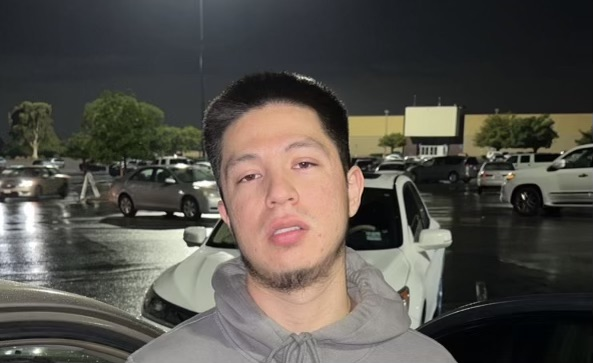

Name: Fernando Ugalde
Age: 25
Birthday: December 7th, 1999
My name is Fernando Ugalde, I am 25 years old, I will be turning 26 this
year in a few months in December the 7th to be exact so im a bit excited
although theres not much to celebrate this year since this year has
sucked. Im not afraid to admit that I am a computer science dropout, I was
in college for about 5 years and I wasnt doing well in my classes so I
decided to drop out and work to sustain myself since Im now living on my
own. I work two part time jobs which keeps me afloat and in my free time I
like to play video games, chill, and practice coding. While I have dropped
out of college I still have a desire to continue learning, just in my own
way. Currently I am learning web development through just watching youtube
tutorials and practicing on my own. I have a long way to go but I am
excited I have alot to prove to myself and others, I cannot let them down.